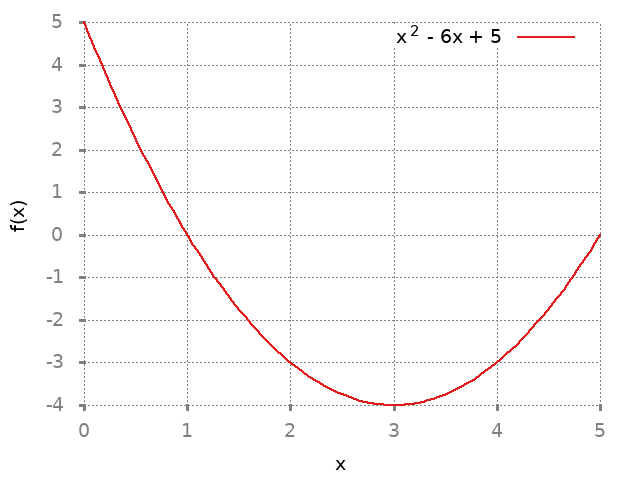

1 Increasing and Decreasing function
1.1 Solution 1
1.1.1 Solution a
| Interval | Property |
|---|---|
| \((p, q]\) | Strictly increasing |
| \([q,r]\) | Strictly decreasing |
| \([r,s]\) | Constant |
| \([s,t]\) | Strictly decreasing |
| \([t,u)\) | Strictly increasing |
| \((u, v]\) | Strictly increasing |
| \([q,t]\) | Weakly decreasing |
Attains maximum value at \(v\).No minimum value.
Local minimum at \(t\). Local maximum at \(q\).
Both local minimum and maximum occur at every point in the interval \((r,s)\)
1.1.2 Solution b
| Interval | Property |
|---|---|
| \([p,q)\) | Strictly increasing |
| \([q,r]\) | Strictly increasing |
| \([r,s]\) | Strictly decreasing |
| \((s,t]\) | Strictly decreasing |
| \([t,u]\) | Strictly increasing |
| \([u,v]\) | Strictly increasing |
| \([t,v]\) | Strictly increasing |
Attains maximum value at \(r\).
Attains minimum value at \(p\)
Local minima attained at \(t,s\)
Local maxima attained at \(r\).
1.2 Solution 2
set terminal png notransparent nointerlace rounded font "Alegreya, 14" set xlabel "x" set ylabel "f(x)" set grid set key right top plot [0:5] x**2 - (6*x) + 5 title "x^2 - 6x + 5" ls 1

\(f(x) = x^2 - 6x + 5\)
\(f'(x) = 2x-6\)
There are no points where \(f\) is not differentiable but there is one point where derivative is 0.
\(x = 3\)
| Property | Value |
|---|---|
| Critical number | 3 |
| Strictly decreasing | \((-\infty, 3]\) |
| Strictly increasing | \([3,\infty)\) |
By the first derivative test, \(f\) has a local minimum at \(3\). Function \(f\) has no local maximum.
1.3 Solution 3
set terminal png notransparent nointerlace rounded font "Alegreya, 14" set xlabel "x" set ylabel "f(x)" set grid set key right top plot [0:5] 3*x - x**2 title "3x - x^2" ls 1

\(g(x) = 3x- x^2\)
\(g'(x) = 3 - 2x\)
There are no points where \(g\) is not differentiable but there is one point where the derivative is \(0\).
\(x = 1.5\)
| Property | Value |
|---|---|
| Critical number | 1.5 |
| Strictly decreasing | \((-\infty, 1.5]\) |
| Strictly increasing | \([1.5,\infty)\) |
By the first derivative test, \(f\) has a local maximum at \(1.5\). Function \(g\) has no local minimum.
1.4 Solution 4
set terminal png notransparent nointerlace rounded font "Alegreya, 14" set xlabel "x" set ylabel "f(x)" set grid set key right top plot 12*x - x**3 title "12x - x^3" ls 1

Viewing local minimum:
set terminal png notransparent nointerlace rounded font "Alegreya, 14" set xlabel "x" set ylabel "f(x)" set grid set key right top plot [-4:0] 12*x - x**3 title "12x - x^3" ls 1

Viewing local maximum:
set terminal png notransparent nointerlace rounded font "Alegreya, 14" set xlabel "x" set ylabel "f(x)" set grid set key right top plot [-2:3] 12*x - x**3 title "12x - x^3" ls 1
\(f(x) = 12x - x^3\)
\(f'(x) = 12 - 3x^2\)
There are no points where \(f\) is not differentiable but there is two point where the derivative is zero.
\(x = 2, -2\)
| Property | Value |
|---|---|
| Critical number | 2,-2 |
| Strictly decreasing | \((-\infty, -2]\), \([2,\infty]\) |
| Strictly increasing | \([-2,2]\) |
By the first derivative test, \(f\) has a local maximum at \(2\) and local minimum at \(-2\).
1.5 Solution 5
Graph of the function:
set terminal png notransparent nointerlace rounded font "Alegreya, 14" set xlabel "x" set ylabel "g(x)" set grid set key right top plot (x**2 - 1)**2 title "(x^2 - 1)^2" ls 1
Graph for understanding their local minimum/maximum better:
set terminal png notransparent nointerlace rounded font "Alegreya, 14" set xlabel "x" set ylabel "g(x)" set grid set key right top plot [-2:2] (x**2 - 1)**2 title "(x^2 - 1)^2" ls 1

\(g(x) = (x^2 - 1)^2\)
\(g(x) = x^4 + 1 - 2x^2\)
\(g'(x) = 4x^3 - 4x\)
\(= 4x(x^2 - 1)\)
There are no points where \(g\) is not differentiable but there are three points where the derivate is zero.
\(x = 0, 1, -1\)
| Property | Value |
|---|---|
| Critical number | 0,1,-1 |
| Strictly decreasing | \((-\infty, -1]\),\([0,1]\) |
| Strictly increasing | \([-1,0]\),\([1,\infty)\) |
By the first derivative test, the local maximum is attained at \(0\) and local minimum is attained at \(-1\) and \(1\).
1.6 Solution 6
Graph of the function:
set terminal png notransparent nointerlace rounded font "Alegreya, 14" set xlabel "x" set ylabel "f(x)" set grid set key right top plot ((x**4 / 2) - 4*x**3 + 9*x**2 - 5) title "x^4/2 - 4x^3 + 9x^2 - 5" ls 1
\(f(x) = \dfrac{x^4}{2} - 4x^3 + 9x^2 - 5\)
\(f'(x) = 2x^3 - 12x^2 + 18x\)
There are no points where \(f\) is not differentiable but there are points where the derivate is zero.
\(f'(x) = x(2x^2 - 12x + 18)\)
\(f'(x) = 2x(x^2 - 6x + 9)\)
\(x = 0,3\)
| Property | Value |
|---|---|
| Critical number | 0,3 |
| Strictly decreasing | \((-\infty, 0]\) |
| Strictly increasing | \([0,\infty)\) |
By the first derivative test, the local minimum is attained at \(0\) and there is no local maximum.
1.7 Solution 7
set terminal png notransparent nointerlace rounded font "Alegreya, 14" set xlabel "x" set ylabel "g(x)" set grid set key right top plot ((x**4 / 2) - 4*x**3 + 5*x**2 - 5) title "x^4/2 - 4x^3 + 5x^2 - 5" ls 1
\(g(x) = \dfrac{x^4}{2} - 4x^3 + 5x^2 - 5\)
\(g'(x) = 2x^3 - 12x^2 + 10x\)
\(= 2x(x^2 - 6x + 5)\)
There are no points where \(f\) is not differentiable but there are three points where derivative is zero.
\(x = 0,1,5\)
| Property | Value |
|---|---|
| Critical number | 0,1,5 |
| Strictly decreasing | \((-\infty, 0], [1,5]\) |
| Strictly increasing | \([0,1], [5,\infty)\) |
By the first derivative test, the local minimum is attained at \(5,0\) and local maximum is attained at \(1\).
1.8 Solution 8
set terminal png notransparent nointerlace rounded font "Alegreya, 14" set xlabel "x" set ylabel "f(x)" set grid set key right top plot x - 4* sqrt(x) title "x - 4*sqrt(x)" ls 1

\(f(x) = x - 4\sqrt{x}\)
Domain: \([0, \infty)\)
\(f'(x) = 1 - \dfrac{2}{\sqrt{x}}\)
There is one point where \(f\) is not differentiable.
\(x = 0\)
There is on point where the deriviate is zero. \(x = 4\).
| Property | Value |
|---|---|
| Critical number | 0,4 |
| Strictly decreasing | \([0,4]\) |
| Strictly increasing | \([4,\infty)\) |
By the first derivative test we have local maximum at \(4\).
1.9 Solution 9
set terminal png notransparent nointerlace rounded font "Alegreya, 14" set xlabel "x" set ylabel "f(x)" set grid set key right top plot x**2 - 4* sqrt(x) title "x^2 - 4*sqrt(x)" ls 1

\(g(x) = x^2 - 4\sqrt{x}\)
Domain: \([0, \infty)\)
\(g'(x) = 2x - \dfrac{2}{\sqrt{x}}\)
\(= 2(x - \dfrac{1}{\sqrt{x}})\)
There is one point where \(g\) is not differentiable. \(x = 0\)
There is one point where the derivative is zero. \(x = 1\)
| Property | Value |
|---|---|
| Critical number | 0, 1 |
| Strictly decreasing | \([0,1]\) |
| Strictly increasing | \([1, \infty)\) |
By the first derivative test, the local minimum is attained at \(1\).
1.10 Solution 10
set terminal png notransparent nointerlace rounded font "Alegreya, 14" set xlabel "x" set ylabel "f(x)" set grid set key right top plot 1 / (x**2 + 1) title "1 / (x^2 + 1)" ls 1

\(f(x) = \dfrac{1}{x^2 + 1}\)
Domain: \((-\infty, \infty)\)
\(f(x) = (x^2 + 1)^{-1}\)
\(f'(x) = -1(x^2 + 1)^{-2}.2x\)
\(= \dfrac{-2x}{(1+x^2)^2}\)
There is no point where \(f\) is not differentiable. There is one point where the derivative is zero. \(x = 0\)
| Property | Value |
|---|---|
| Critical number | 0 |
| Strictly decreasing | \([0, \infty)\) |
| Strictly increasing | \((-\infty, 0)\) |
By first derivative test, the local maximum is attained at zero.
1.11 Solution 11
set terminal png notransparent nointerlace rounded font "Alegreya, 14" set xlabel "x" set ylabel "g(x)" set grid set key right top plot x / (x**2 + 1) title "x / (x^2 + 1)" ls 1

\(g(x) = \dfrac{x}{x^2 + 1}\)
\(g'(x) = \dfrac{x.-1.2x}{(x^2 + 1)^2} + (x^2 + 1)^{-1}\)
\(= \dfrac{-2x^2}{(x^2 + 1)^2} + \dfrac{1}{(1+x^2)}\)
\(= \dfrac{-2x^2}{(1+x^2)^2} + \dfrac{1+x^2}{(1+x^2)^2}\)
\(= \dfrac{1+x^2 -2x^2}{(1+x^2)^2} = \dfrac{1-x^2}{(1+x^2)^2}\)
There is no point where \(g\) is not differentiable. There is two points where the derivative is zero. \(x = 1, -1\)
| Property | Value |
|---|---|
| Critical number | 1,-1 |
| Strictly decreasing | \((-\infty, -1], [1,\infty)\) |
| Strictly increasing | \([-1,1]\) |
By first derivative test, the local minimum is attained at \(-1\) and the local maximum is attained at \(1\).
1.12 Solution 12
set terminal png notransparent nointerlace rounded font "Alegreya, 14" set xlabel "x" set ylabel "h(x)" set grid set key right top plot x**2 / (x**2 + 1) title "x^2 / (x^2 + 1)" ls 1
\(h(x) = \dfrac{x^2}{x^2+1}\)
Domain: \((-\infty, \infty)\)
\(h(x) = x^2(x^2 + 1)^{-1}\)
\(h'(x) = x^2.-1.(x^2 + 1)^{-2}.2x + (x^2 + 1)^{-1}.2x\)
\(= \dfrac{-2x^3}{(x^2 + 1)^2} + \dfrac{2x}{(1+x^2)}\)
\(= \dfrac{-2x^3 + 2x(1+x^2)}{(1+x^2)^2}\)
\(= \dfrac{2x + 2x^3 - 2x^3}{(1+x^2)^2}\)
\(= \dfrac{2x}{(1+x^2)^2}\)
There is no point where \(h\) is not differentiable. There is one point where the derivative is zero. \(x=0\)
| Property | Value |
|---|---|
| Critical number | 0 |
| Strictly decreasing | \((-\infty, 0]\) |
| Strictly increasing | \([0, \infty)\) |
By first derivative test, the local minimum is attained at \(0\). It has no local maximum.
1.13 Solution 13
\(a_n = (\dfrac{n+1}{n^2+3})_{n=1}^{\infty}\)
Let's study the function
\(f(x) = \dfrac{x+1}{x^2 + 3}\)
Domain: \([1, \infty)\)
\(f(x) = (x+1)(x^2 + 3)^{-1}\)
\(f'(x) = (x+1).-1.(x^2+3)^{-2}.2x + (x^2 + 3)^{-1}.1\)
\(= \dfrac{-1(x+1)2x}{(x^2+3)^2} + \dfrac{1}{x^2 + 3}\)
\(= \dfrac{-2x(x+1)}{(x^2+3)^2} + \dfrac{x^2 + 3}{(x^2 + 3)^2}\)
\(= \dfrac{x^2 + 3 - 2x^2 - 2x}{(x^2 + 3)^2}\)
\(= \dfrac{3-x^2-2x}{(x^2+3)^2}\)
\(\forall x \geq 1; (x^2 + 3)^2 > 0\)
\(3 - x^2 - 2x \leq 0\)
\(\dfrac{3-x^2-2x}{(x^2+3)^2} \leq 0\)
Thus \(f\) is weakly decreasing in the interval \([1, \infty)\). This means that for any real number \(x_1\) and \(x_2\) with \(1 \leq x_1 < x_2\), \(f(x_1) > f(x_2)\). In particular, for every positive integer \(f(n) > f(n+1)\). But \(f(n) = a_n\), so this means for every positive integer \(a_n > a_{n+1}\). In other words, \((a)_{n=1}^{\infty}\) is strictly decreasing.
1.14 Solution 14
\(\left( \dfrac{n-1}{n^2+8} \right)^{\infty}_{n=1}\)
Let's study the function
\(f(x) = \dfrac{n-1}{n^2+8}\)
Domain: \([1, \infty)\)
\(f(x) = (x-1)(x^2+8)^{-1}\)
\(f'(x) = (x-1).-1.(x^2+8)^{-2}.2x + (x^2+8)^{-1}(1)\)
\(= \dfrac{-(x-1).2x}{(x^2+8)^2} + \dfrac{1}{x^2 + 8}\)
\(= \dfrac{-2x(x-1)}{(x^2+8)^2} + \dfrac{x^2+8}{(x^2+8)^2}\)
\(= \dfrac{x^2+8-2x^2+2x}{(x^2+8)^2}\)
\(= \dfrac{-x^2+2x+8}{(x^2+8)^2}\)
\(= \dfrac{2x-x^2+8}{(x^2+8)^2}\)
\(\forall x \geq 1\)
\((x^2 + 8)^2 > 0\)
\((2x - x^2 + 8) < 10\)
So, \(a > 0 \implies \dfrac{1}{1} > 0\)
\(a > 0 \land b > 0 \implies ab > 0\)
\(a > 0 \land b < 0 \implies ab < 0\)
So for \([1,4)\)
\(2x-x^2 + 8 > 0\)
And \([4, \infty)\)
\(2x-x^2 + 8 < 0\)
So the function is both increasing and decreasing with the domain \([1, \infty)\). So the sequence is not monotone.
1.15 Solution 15
\(\left( \dfrac{1}{n^2} - \dfrac{1}{n} \right)^{\infty}_{n=1}\)
Let's study the function
\(f(x) = \left( \dfrac{1}{n^2} - \dfrac{1}{n} \right)\)
\(f(x) = \left( \dfrac{1-x}{x^2} \right) = (1-x)x^{-2}\)
\(f'(x) = (1-x).-2.x^{-3} + x^{-2}.-1\)
\(= (x-1)2x^{-3} - \dfrac{1}{x^2}\)
\(= \dfrac{2(x-1)}{x^3} - \dfrac{1}{x^2}\)
\(= \dfrac{2x-2-x}{x^3} = \dfrac{x-2}{x^3}\)
Domain: \([1, \infty)\)
\(\forall x \geq 1; x^3 > 0\)
For \(x \in [1,2); x-2 < 0\)
\(x \in (2,\infty); x-2 > 0\)
\(x = 2, 0\)
So the function is both increasing and decreasing with the domain \([1,\infty)\). So the sequence is not monotone.
1.16 Solution 16
\(\left( \dfrac{1}{n^2} - \dfrac{4}{n} \right)^{\infty}_{n=1}\)
Let's study the function
\(f(x) = \dfrac{1}{x^2} - \dfrac{4}{x}\)
Domain: \([1, \infty)\)
\(f(x) = \dfrac{1}{x^2} - \dfrac{4x}{x^2} = \dfrac{1-4x}{x^2} = (1-4x)x^{-2}\)
\(f'(x) = (1-4x).-2x^{-3}+x^{-2}.-4\)
\(= \dfrac{8x-2}{x^3} - \dfrac{4}{x^2}\)
\(= \dfrac{8x-2-4x}{x^3}\)
\(= \dfrac{4x-2}{x^3}\)
\(\forall x \geq 1; x^3 > 0\)
\(\forall x \geq 1; 4x-2 > 0\)
So, \(\dfrac{4x-2}{x^3} > 0\)
Therefore \(f\) is strictly increasing on the interval \([1, \infty)\). This means that for any real number \(x_1\) and \(x_2\) with \(1 \leq x_1 \leq x_2\), \(f(x_1) < f(x_2)\). In particular, for every positive integer \(n\), \(f(n) < f(n+1)\). But \(f(n) = a_n\), so that means that for every positive integer \(n\), \(a_n < a_{n+1}\). In other words, \((a_n)^{\infty}_{n=1}\) is strictly increasing.
1.17 Solution 17
\(\left( \dfrac{2n^3}{3} - 5n^2 + 12n \right)_{n=1}^{\infty}\)
Let's study the function
\(f(x) = \dfrac{2x^3}{3} - 5x^2 + 12x\)
Domain: \([1, \infty)\)
\(f'(x) = 2x^2 - 10x + 12\)
\(\forall x \geq 1 2x^2 > 0\)
\(\forall x \geq 1 12 > 0\)
\(\forall x \geq 1 -10x < 0\)
For \(x \in [1,5)\), \(x-5 < 0\)
\(x=5\); \(x-5 = 0\)
\(x \in (5, \infty); x-5 > 0\)
So the function is both increasing and decreasing within the domain \([1, \infty)\). So the sequence is not monotone.
1.18 Solution 18
\(\left( \dfrac{4n^3}{3} - 9n^2 + 20n \right)_{n=1}^{\infty}\)
Let's study the function
\(f(x) = \dfrac{4x^3}{3} - 9x^2 + 20x\)
\(f'(x) = 4x^2 - 18x + 20\)
Domain: \([1, \infty)\)
\(f'(x) = 2x(2x-9) + 20\)
\(x \in [1,4.5); 2x-9 < 0\)
\(x=4.5; 2x-9=0\)
\(x \in (4.5, \infty); 2x-9 > 0\)
So the function is both increasing and decreasing within the domain \([1, \infty)\). So the sequence is not monotone.
1.19 Solution 19
\(\left( \sqrt{n^2 + 2} -n \right)_{n=1}^{\infty}\)
Let's study the function
\(f(x) = \sqrt{x^2 + 2} -n\)
\(f(x) = (x^2 + 2)^{1/2} - x\)
\(f'(x) = \dfrac{1}{2}(x^2+2)^{-1/2}.2x - 1\)
\(f'(x) = \dfrac{2x}{2\sqrt{x^2 + 2}} - 1\)
\(= \dfrac{x}{\sqrt{x^2 + 2}} - 1\)
Domain: \([1, \infty)\)
\(\forall x \geq 1; x > 0\)
\(\forall x \geq 1; \sqrt{x^2 + 2} > 0\)
So, \(\forall x \geq 1\)
\(\dfrac{x}{\sqrt{x^2 + 2}} > 0\)
When \(x=1\), \(\dfrac{x}{\sqrt{x^2 + 2}} = \dfrac{1}{\sqrt{3}} \approx 0.57\)
\(0.57 - 1 < 0\)
When \(x=2\), \(\dfrac{x}{\sqrt{x^2 + 2}} = \dfrac{2}{\sqrt{6}} \approx 0.81\)
\(0.81 - 1 < 0\)
We know that
\(x^2 + 2 > x^2\)
\(\sqrt{x^2 + 2} > x\)
\(1 > \dfrac{x}{x^2 + 2}\)
\(0 > \dfrac{x}{x^2 + 2} - 1\)
So, \(\dfrac{x}{\sqrt{x^2 + 2}} - 1 < 0\)
Thus \(f\) is strictly decreasing on the interval \([1, \infty)\). This measns that for any real numbers \(x_1\) and \(x_2\) with \(1 \leq x_1 \leq x_2\), \(f(x_1) > f(x_2)\). In particular, for every positive integer \(n\), \(f(n) > f(n+1)\). But \(f(n) = a_n\), so this means for every positive integer \(n\), \(a_n > a_{n+1}\). In other words, \((a_n)^{\infty}_{n=1}\) is strictly decreasing.
1.20 Solution 20
\(\left( \sqrt{n^2 + 2n} - n \right)^{\infty}_{n=1}\)
Let's study the function
\(f(x) = \sqrt{x^2 + 2x} - x\)
\(f'(x) = \dfrac{1}{2}(x^2 + 2x)^{-1/2}(2x+2)-1\)
\(= \dfrac{x+1}{\sqrt{x^2 + 2x}} - 1\)
\(x^2 + 1^2 + 2x > x^2 + 2x\)
\(x + 1 > \sqrt{x^2 + 2x}\)
\(\dfrac{x+1}{\sqrt{x^2 + 2x}} > 1\)
\(\dfrac{x+1}{\sqrt{x^2 + 2x}} - 1 > 0\)
Thus \(f\) is strictly increasing on the interval \([1, \infty)\). This means that for any real number \(x_1\) and \(x_2\) with \(1 \leq x_1 \leq x_2\), \(f(x_1) < f(x_2)\). In particular, for every positive integer \(n\), \(f(n) < f(n+1)\). But \(f(n) = a_n\), so that means that for every positive integer \(n\), \(a_n < a_{n+1}\). In other words, \((a_n)^{\infty}_{n=1}\) is strictly increasing.
1.21 Solution 21
\(a\) and \(b\) are real numbers.
\(f(x) = ax^4 + bx^3\)
Maximum value of \(f\) is 1.
\(f\) attains this maximum value at \(-1\).
\(f(-1) = a(-1)^4 + b(-1)^3\)
\(1 = a - b\)
\(f'(x) = 4ax^3 + 3bx^2\)
From theorem 4.3.6, we know that either \(f\) is not differentiable at \(-1\) or \(f'(-1) = 0\). We know that \(f'(x)\) is differentiable in it's domain.
\(f'(-1) = 4a(-1^3) + 3b(-1)^2\)
\(0 = -4a + 3b\)
\(0 = -a + 3b - 3a\)
\(0 = -a + 3(b-a)\)
\(0 = -a + 3.-1\)
\(a = -3\)
\(a-b=1\)
\(-3-b=1\)
\(b = -3-1 = -4\)
So, \(a=-3\) and \(b=-4\)
1.22 Solution 22
Domain of \(f\) is interval \(I\).
Domain of \(g\) is interval \(J\).
\(\forall x \in J g(x) \in I\)
1.22.1 Solution a
Suppose \(f\) is strictly increasing on \(I\).
Suppose \(g\) is strictly increasing on \(J\).
We need to prove that \(f \circ g\) is strictly increasing on \(J\).
\(\forall x_1 \in I \forall x_2 \in I x_1 < x_2 \implies f(x_1) < f(x_2)\)
\(\forall x_3 \in J \forall x_4 \in J x_3 < x_4 \implies g(x_3) < g(x_4)\)
Suppose \(\forall x_5 \in J \forall x_6 \in J\)
Suppose \(x_5 < x_6\)
Since \(g\) is strictly increasing,
\(g(x_5) < g(x_6)\)
We know that both \(g(x_5)\) and \(g(x_6) \in I\)
Let \(x_7 = g(x_5)\)
\(x_8 = g(x_6)\)
So, \(x_7 < x_8\)
Since \(x_7 \in I \land x_8 \in I\) and \(f\) is strictly increasing,
\(f(x_7) < f(x_8)\)
So, \(f(g(x_5)) < f(g(x_6))\)
Since \(x_5\) and \(x_6\) are arbitrary element,
\(\forall x_1 \in J \forall x_2 \in J f \circ g (x_1) < f \circ g (x_2)\)
1.22.2 Solution b
Supose \(f\) is strictly decreasing on \(I\).
Suppose \(g\) is strictly decreasing on \(J\).
We need to prove that \(f \circ g\) is strictly increasing on \(J\).
\(\forall x_1 \in I \forall x_2 \in I x_1 < x_2 \implies f(x_1) > f(x_2)\)
\(\forall x_3 \in J \forall x_4 \in J x_3 < x_4 \implies g(x_3) > g(x_4)\)
Let's assume an arbitrary element \(x_5\) and \(x_6\) in \(J\).
Suppose \(x_5 < x_6\)
We know that \(g(x_5) > g(x_6)\)
Since \(g(x_5) \in I\) and \(g(x_6) \in I\). Since \(f\) is strictly decreasing,
\(f(g(x_5)) < f(g(x_6))\)
Since \(x_5\) and \(x_6\) is an arbitrary element. \(f \circ g\) is strictly increasing on \(J\).
1.22.3 Solution c
Suppose \(f\) is strictly increasing on \(I\).
Suppose \(g\) is strictly decreasing on \(J\).
\(\forall x_1 \in I \forall x_2 \in I x_1 < x_2 \implies f(x_1) < f(x_2)\)
\(\forall x_3 \in J \forall x_4 \in J x_3 < x_4 \implies g(x_3) > g(x_4)\)
Let's assume an arbitrary element \(x_5\) and \(x_6\) in \(J\).
Suppose \(x_5 < x_6\)
We know that \(g(x_5) > g(x_6)\)
Since \(g(x_5) \in I\) and \(g(x_6) \in I\) and \(f\) is strictly increasing.
\(f(g(x_5)) > f(g(x_5))\)
Since \(x_5\) and \(x_6\) is an arbitrary element \(f \circ g\) is strictly decreasing.
1.23 Solution 23
Suppose that \(f'(x) \leq 0\) for all \(x\) in the interior of \(I\). To prove that \(f\) is weakly decreasing on \(I\), we assume that \(x_1\) and \(x_2\) are elements of \(I\) and \(x_1 < x_2\). According to definition 4.3.1, we must prove that \(f(x_1) \geq f(x_2)\)
We need to compare \(f(x_1)\) and \(f(x_2)\), so let's try applying the mean value theorem on the interval \([x_1, x_2]\). Notice that \([x_1, x_2] \subseteq I\). So since \(f\) is continous on \(I\) and differentiable on the interior of \(I\), it is continous on \([x_1, x_2]\) and differentiable on \((x_1, x_2)\). Therefore according to mean value thorem, there is some number \(c\) such that \(x_1 < c < x_2\) and
\(\dfrac{f(x_2) - f(x_1)}{x_2 - x_1} = f'(c)\)
But we have assumed that \(f'(x) \leq 0\) for all \(x\) in the interior of \(I\). So \(f'(c) \leq 0\). Since \(x_1 < x_2\), it follows that \(f(x_2) - f(x_1) = f'(c)(x_2-x_1) \leq 0\)
and therefore \(f(x_2) \leq f(x_1)\)
1.24 Solution 24
Suppose that \(f'(x) = 0\) for all \(x\) in the interior of \(I\). We must prove \(f\) is constant on \(I\).
We assume that \(x_1\) and \(x_2\) are elements of \(I\). Let's try applying the mean value theorem to \(f\) on the interval \([x_1,x_2]\). Notice that \([x_1, x_2] \subseteq I\), so since \(f\) is continous on \(I\) and differentiable on the interior of \(I\), it is continous on \([x_1,x_2]\) and differentiable on \((x_1, x_2)\). Therefore according to mean value theorem, there is some number \(c\) such that \(x_1 < c < x_2\)
\(\dfrac{f(x_2) - f(x_1)}{x_2 - x_1} = f'(c)\)
\(f(x_2) - f(x_1) = f'(c)(x_2 - x_1)\)
We have assumed that \(f'(c) = 0\) for all in the interior of \(I\), so
\(f(x_2) - f(x_1) = 0\)
\(f(x_2) = f(x_1)\)
So \(f\) is constant on \(I\).
Notice that in the proof we assumed that \(x_1 < x_2\). In case if it is \(x_1 > x_2\), it's the same proof with intervals reversed. In case it's \(x_1 = x_2\), then from the definition of the function it follows that \(f(x_1) = f(x_2)\).